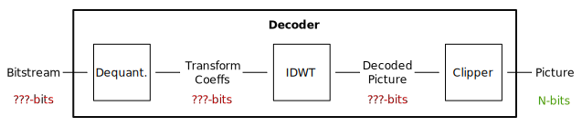
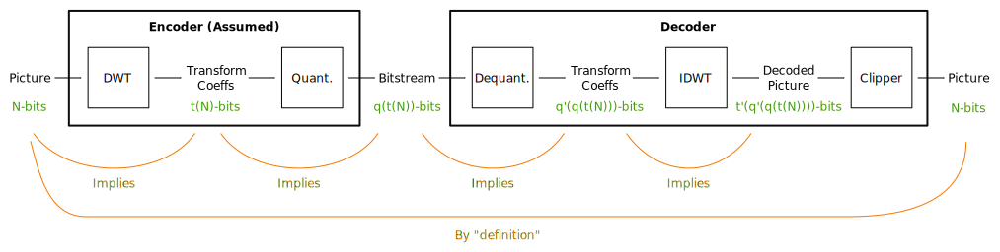

Caveats¶
While this software aims to produce robust bit width figures, it can only go as far as the VC-2 specification and current mathematical techniques allow.
Assumed encoder behaviour¶
The VC-2 standard only defines the behaviour of a decoder. Unfortunately, due to the clipper at the output, it is not possible to work backwards from the output bit width to calculate the input or intermediate signal ranges (as illustrated below).
The standard also does not define legal ranges for values in a bitstream (which would allow us to work forwards through the decoder). Instead we must make some assumptions about the behaviour of VC-2 encoders which will allow us to determine the ranges of values which could appear in real bitstreams.
This software makes the assumption that all VC-2 encoders consist of a (forward) discrete wavelet transform followed by a dead zone quantiser implemented as informatively suggested by the standard. Once this assumption has been made it becomes possible to determine the bit widths of every part of a VC-2 encoder and decoder.
In principle, VC-2 encoder implementations are free to diverge from this assumed behaviour and so may produce bitstreams with different signal ranges to those predicted by this software. In practice, it is relatively unlikely to be the case. Nevertheless, you should be aware that this software relies on this assumption.
Non-linearity¶
Though VC-2 is based on the (linear) wavelet transform, its use of integer arithmetic and quantisation makes VC-2 a non-linear filter. Due to the difficulty of analysing large non-linear filters, this software is generally unable to give exact answers about the numbers of bits required and instead are given as a range of possible values.
The upper-bounds on signal levels and bit widths are computed by this software using robust mathematical models of VC-2’s filters and are guaranteed not to be under-estimates. However, these upper bounds can be (sometimes significant) over-estimates of the signal levels produced by true worst-case signals.
Likewise, lower-bounds on signal level ranges are provided based on the signal levels exhibited during the encoding and decoding of specially created test patterns. Since these test patterns are valid pictures (or the result of encoding valid pictures), they represent concrete lower-bounds on signal levels. Despite producing more extreme signals than natural pictures or noise in general, the test patterns are not guaranteed to elicit worst-case signal levels. As such the signal levels produced merely set a lower-bound on the true worst-case.